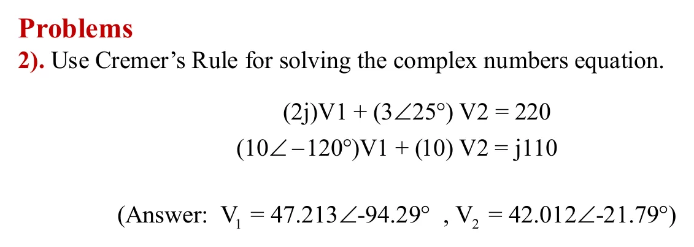

ทำไมวงจรกระแสสลับต้องใช้จำนวนเชิงซ้อน Why AC circuits need complex numbers — a spinning arrow, its shadow, and the current in the wire
Why AC circuits need complex numbers A spinning arrow, its shadow, and the current in the wire

สไลด์หน้า 13 บอกว่า สัญญาณพื้นฐานของวิศวกรรมไฟฟ้าคือคลื่นไซน์ และคลื่นไซน์เขียนได้ด้วยจำนวนเชิงซ้อน หน้านี้แสดงว่าทำไม: ไฟบ้าน 220 V 50 Hz ขึ้นลงเป็นคลื่นไซน์ ถ้ามองคลื่นไซน์เป็น เงาของลูกศรที่หมุนบนแกนจินตภาพ (ลูกศรนี้เรียกว่าเฟเซอร์, phasor) การหากระแสเหลือแค่ การหารจำนวนเชิงซ้อนครั้งเดียว \(\mathbf{I} = \mathbf{V}/Z\) หน้านี้มี 7 โจทย์ เรียงทีละข้อ ห้าข้อแรกเป็นวงจรกระแสสลับ (กระแสจะไหลเมื่อคำนวณ I ได้) ข้อ 6 คือการบ้านข้อ 2 ของสไลด์
Slide p. 13 says that the basic signal of electrical engineering is the sinusoid, and a sinusoid can be written with complex numbers. This page shows why. Mains at 220 V 50 Hz rises and falls as a sine wave. If you see the sine wave as the shadow of a spinning arrow on the imaginary axis (the arrow is called a phasor), finding the current becomes one complex division, \(\mathbf{I} = \mathbf{V}/Z\). This page has 7 problems, one after another: the first five are AC circuits (the current flows once you have found I), and problem 6 is homework problem 2 of the slides.
ประเด็นสำคัญของหน้านี้
- คลื่นไซน์คือเงาของจำนวนเชิงซ้อนที่หมุน บนแกนจินตภาพ: \(v(t) = \mathrm{Im}[\mathbf{V}e^{j\omega t}] = V_m\sin(\omega t + \theta)\)
- อิมพีแดนซ์ \(Z = R + jX\) รวม R, L, C เป็นจำนวนเชิงซ้อนตัวเดียว โดย \(X_L = \omega L\) และ \(X_C = 1/(\omega C)\)
- \(\mathbf{I} = \mathbf{V}/Z\) คือการหารจำนวนเชิงซ้อนครั้งเดียว
- แรงดันต้องบวกแบบเชิงซ้อน: \(|V_R| + |V_L| \ne |V|\) เพราะถึงค่ายอดไม่พร้อมกัน
- หน้านี้ใช้แบบแผนของวิชา: อ้างอิง sin และขนาดเป็นค่ายอด แหล่งจ่าย \(v(t) = 220\sin(100\pi t)\) V จึงเขียนเป็น \(\mathbf{V} = 220\angle 0^\circ\) V (ไฟบ้านจริง 220 V เป็นค่ายังผล (root mean square, rms) มีค่ายอด \(220\sqrt2 \approx 311\) V)
Key points of this page
- A sine wave is the shadow of a rotating complex number on the imaginary axis: \(v(t) = \mathrm{Im}[\mathbf{V}e^{j\omega t}] = V_m\sin(\omega t + \theta)\).
- Impedance \(Z = R + jX\) combines R, L and C into one complex number, with \(X_L = \omega L\) and \(X_C = 1/(\omega C)\).
- \(\mathbf{I} = \mathbf{V}/Z\) is a single complex division.
- Voltages must be added as complex numbers: \(|V_R| + |V_L| \ne |V|\), because they do not peak together.
- This page follows the course convention: sine reference, peak values. The source \(v(t) = 220\sin(100\pi t)\) V is written \(\mathbf{V} = 220\angle 0^\circ\) V (real 220 V mains is an rms (root-mean-square) value, with a peak of \(220\sqrt2 \approx 311\) V).
การบ้านข้อ 2: กฎของคราเมอร์กับสัมประสิทธิ์เชิงซ้อน
Homework problem 2: Cramer's rule with complex coefficients

กฎของคราเมอร์ใช้ได้เหมือนเดิมทุกอย่าง เพียงแต่ คูณในรูปเชิงขั้ว (ขนาดคูณ มุมบวก) แล้วลบในรูปคาร์ทีเซียน ระนาบทางซ้ายวาดการลบแต่ละครั้งเป็นการต่อลูกศร: ผลคูณตัวแรก (เหลือง) ต่อด้วยลบผลคูณตัวที่สอง (ฟ้าประ) ได้ผลลัพธ์ (ชมพู)
Cramer's rule works unchanged; just multiply in polar form (sizes multiply, angles add), then subtract in Cartesian form. The plane on the left draws each subtraction as joined arrows: the first product (yellow), then minus the second product (dashed blue), giving the result (pink).
ใส่ระบบ 2×2 เชิงซ้อนของคุณเอง
Your own complex 2×2 system
2j, 3∠25, 10<-120, -4-j3 แล้วกด "แก้ระบบนี้"2j, 3∠25, 10<-120 or -4-j3, then press "Solve this system"ลองทำดู 1 — เงาของลูกศรที่หมุน
- กดหยุดแล้วดูเฟเซอร์ V: เส้นประแนวนอนพาปลายลูกศรไปที่จุดบนแกนจินตภาพ ความสูงของจุดนั้นเป็นสัดส่วนกับค่า v(t) ที่ปลายขวาของกราฟพอดี คลื่นไซน์จึงเป็นเพียงเงาของลูกศรที่หมุนบนแกนจินตภาพ
- จุดในสายไฟหยุดนิ่งชั่วขณะเมื่อเงาของ I เป็นศูนย์ (ลูกศร I นอนตามแกนจริง) และวิ่งเร็วที่สุดเมื่อ I ตั้งตามแกนจินตภาพ
- ข้อ 4: เปลี่ยนความถี่ ลูกศรหมุนเร็วขึ้น และมุมระหว่าง V กับ I เปลี่ยนด้วย เพราะ \(X_L = \omega L\) ขึ้นกับความถี่
ลองทำดู 2 — หาร j คือหมุน −90°
- ข้อ 1–3 มีขนาด 40 Ω เท่ากัน กระแสจึงเป็น 5.5 A เท่ากันทุกข้อ ต่างกันแค่มุม: 0°, −90°, +90°
- ตัวเหนี่ยวนำ: \(Z = j\omega L\) กระแส ตามหลัง แรงดัน 90° (หารด้วย j คือหมุน −90°)
- ตัวเก็บประจุ: \(Z = -j/(\omega C)\) กระแส นำหน้า แรงดัน 90°
ลองทำดู 3 — กฎแรงดันต้องบวกแบบเชิงซ้อน
- ข้อ 4 ค่าตั้งต้น: \(|V_R| = 132\) V และ \(|V_L| = 176\) V รวมกันได้ 308 V มากกว่าแหล่งจ่าย 220 V! ผิดหรือ? ไม่ผิด เพราะทั้งสองไม่ได้ถึงยอดพร้อมกัน
- บวกแบบจำนวนเชิงซ้อนได้ \(220\angle 0^\circ\) พอดี (สามเหลี่ยม 3-4-5) นี่คือเหตุผลที่ต้องใช้จำนวนเชิงซ้อน
- คำถาม: ถ้าปรับ L จน \(X_L = R\) มุมของกระแสจะเป็นเท่าไร และ \(|Z|\) เป็นกี่เท่าของ R
Try this 1 — the shadow of a spinning arrow
- Pause and look at phasor V: the horizontal dashed line carries its tip to a dot on the imaginary axis, and the dot's height is in proportion to v(t) at the right end of the graph. A sine wave is just the shadow of a spinning arrow on the imaginary axis.
- The dots in the wire stop for an instant when the shadow of I is zero (the arrow I lies along the real axis), and run fastest when I stands along the imaginary axis.
- Problem 4: change the frequency. The arrows spin faster, and the angle between V and I changes too, because \(X_L = \omega L\) depends on frequency.
Try this 2 — dividing by j is a −90° turn
- Problems 1–3 all have a size of 40 Ω, so the current is 5.5 A in each; only the angle differs: 0°, −90°, +90°.
- Inductor: \(Z = j\omega L\), and the current lags the voltage by 90° (dividing by j is a −90° turn).
- Capacitor: \(Z = -j/(\omega C)\), and the current leads the voltage by 90°.
Try this 3 — the voltage law needs complex addition
- Problem 4 with the starting values: \(|V_R| = 132\) V and \(|V_L| = 176\) V add up to 308 V, more than the 220 V source! Wrong? No: the two do not peak at the same moment.
- Added as complex numbers they give exactly \(220\angle 0^\circ\) (a 3-4-5 triangle). That is why we need complex numbers.
- Question: if L is set so that \(X_L = R\), what is the current's angle, and \(|Z|\) is how many times R?